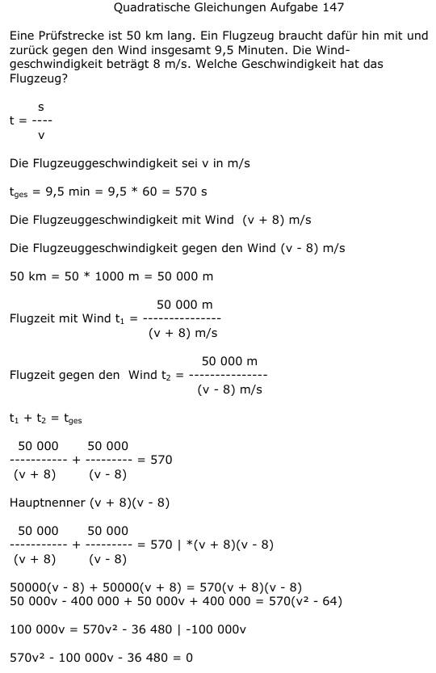

Aufgabe 147 Eine Prüfstrecke ist 50 km lang. Ein Flugzeug braucht dafür hin mit und zurück gegen den Wind insgesamt 9,5 Minuten. Die Windgeschwindigkeit beträgt 8 m/s. Welche Geschwindigkeit hat das Flugzeug? s t = --- v Die Flugzeuggeschwindigkeit sei v in m/s tges = 9,5 min = 9,5 * 60 = 570 s Die Flugzeuggeschwindigkeit mit Wind (v + 8) m/s Die Flugzeuggeschwindigkeit gegen den Wind (v - 8) m/s 50 km = 50 * 1000 m = 50 000 m 50 000 m Flugzeit mit Wind t1 = ------------- (v + 8) m/s 50 000 m Flugzeit gegen den Wind t2 = ------------- (v - 8) m/s t1 + t2 = tges 50 000 50 000 ---------- + --------- = 570 (v + 8) (v - 8) Hauptnenner (v + 8)(v - 8) 50 000 50 000 ---------- + --------- = 570 |*(v + 8)(v - 8) (v + 8) (v - 8) 50000(v - 8) + 50000(v + 8) = 570(v + 8)(v - 8) 50 000v - 400 000 + 50 000v + 400 000 = = 570(v2 - 64) 100 000v = 570v2 - 36 480 |-100 000v 570v2 - 100 000v - 36 480 = 0 A, B, C - Formel A = 570 ; B = -100 000 ; C = -36 480  100000 ± 100415 v1,2 = ------------------ 1140 100000 + 100415 200415 v1 = ------------------ = -------- = 175,8 m/s = 1140 1140 v1 = 175,8 * 3,6 km/h = 632,9 km/h 100000 - 100415 -415 v2 = ----------------- = ------- = 1140 1140 keine Lösung, negative Geschwindigkeit.